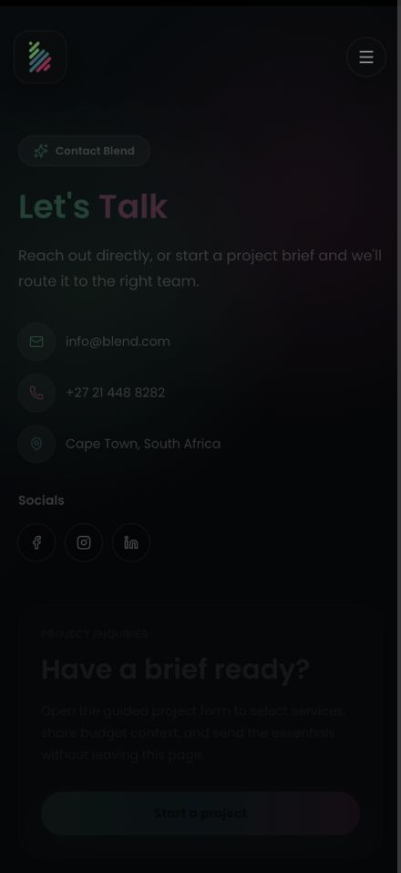

22 October 2026 • Local production build • Next.js 16.1.1Blend website performance audit
The local build, route, asset, and rendering checks pass after targeted fixes. A fast deployed, fully authenticated experience still needs a clean-browser measurement and real-user data.
Test coverage
| Check | Result |
|---|
| Production compilation and TypeScript | Passed on Node 22.23.2 and the declared Node 24 runtime (24.22.1) |
| ESLint and git diff whitespace checks | Passed |
| HTTP routes and APIs | 46/46 passed; 35 page routes, CMS reads, redirects, 404s, contact validation, media range and image optimization |
| Authenticated rendering | 34 public pages checked; 8 representative page types additionally checked at 320px, 440px, and 1440px viewport settings |
| Local static references | 111 literal asset references checked; no missing assets; all seven generated video posters exist |
| Service gallery remote images | 39/39 current URLs return 200; one broken URL was replaced |
| Local request concurrency | 200 requests, 20 concurrent; 0 failures; p50 12 ms, p95 28 ms |
Load timings are loopback HTTP completion times for statically generated page responses. They do not measure CDN latency, browser rendering, Firestore scale, or production capacity. Browser image checks cover images loaded at inspection time and do not force all lazy assets to download. No successful contact email, CMS edit, account creation, or deployment was performed.
Clean-browser Lighthouse: signed-out access screen
These scores measure the access screen shown without a Firebase session. They must not be presented as whole-site scores. The baseline is one run; the final mobile result has three runs. CLI Lighthouse 13.5.0, default simulated mobile throttling or desktop preset, fresh headless Chrome.
| Run | Performance | FCP | LCP | Blocking time | Layout shift |
|---|
| Before, mobile | 74 | 1.1 s | 4.9 s | 128 ms | 0.155 |
| After, mobile 1 | 91 | 1.1 s | 3.6 s | 37 ms | 0.000 |
| After, mobile 2 | 96 | 1.1 s | 2.7 s | 35 ms | 0.000 |
| After, mobile 3 | 96 | 1.1 s | 2.8 s | 78 ms | 0.000 |
| After, desktop | 100 | 0.3 s | 0.7 s | 0 ms | 0.000 |
Mobile median: 96/100, LCP about 2.8 seconds, CLS 0. The LCP still exceeds the 2.5-second “good” target even though the Lighthouse score is green. Accessibility, best practices, and SEO scored 100 for the clean access-screen audits.
Existing-session audit is provisional. Native DevTools runs displayed scores of 54 before and 81 after, but extensions affected both runs, the baseline timed out, and the final run's captured screenshot showed the sign-in transition. These numbers cannot certify fully authenticated homepage performance or isolate the effect of the code changes. The final run also reported 824 ms blocking time, so JavaScript responsiveness needs a clean follow-up.
Changes made
- Render the sign-in form in the initial HTML with disabled controls until authentication is ready, avoiding the large loader-to-form layout shift.
- Mount case-study video previews only on hover or keyboard focus; use seven lightweight real video posters while idle.
- Mount homepage latest-work video/iframe media only when its section approaches the viewport.
- Remove priority loading from below-the-fold images and add responsive image sizing.
- Serve a 1280×720 H.264 background video without its unused audio track, retaining the original source. Video size: 31.60 MB → 12.57 MB (60.2% smaller).
- Replace the 1.3 MB homepage PNG poster with an 8.8 KiB WebP (99.35% smaller).
- Replace one service-gallery image URL that returned 404.
- Use +27 21 448 8282 in shared contact details and the footer; verified both phone links as tel:+27214488282.
Remaining work before a production performance sign-off
- Measure the deployed authenticated site in a clean browser. Cover all major page types on a throttled mobile device, with the real hosting/CDN setup. The supplied existing browser has extensions and authentication transitions that confound Lighthouse.
- Reduce video transfer further for mobile. The hero remains 12.57 MB; individual case-study videos remain roughly 12–63 MB when activated. Consider shorter mobile background footage, adaptive streaming, and an image fallback for reduced motion or data saving.
- Profile first-party JavaScript. Firebase Auth/Firestore and motion code load globally; distinguish their execution cost from extensions before splitting or deferring modules. Native audit blocking-time results are too confounded to assign all cost to the site.
- Collect real-user Web Vitals. Validate LCP ≤2.5 s, CLS ≤0.1, and INP ≤200 ms at the 75th percentile. Navigation Lighthouse audits do not establish real-user INP.
- Review production media caching. Local public media returns max-age=0; hashed Next assets are cached. Verify CDN/media policies without permanently caching mutable CMS content.
Threshold references: Google PageSpeed Insights and Google Core Web Vitals guidance.
Evidence and repeatable checks
Summary JSON · HTTP and load results · Authenticated browser checks · External image results · Baseline signed-out audit · After signed-out mobile audit · After signed-out desktop audit
Start a local production build on port 3100, then run npm run test:performance. This check intentionally restricts concurrent requests to localhost. For fresh Lighthouse runs, use npm exec --yes --package=lighthouse@13.5.0 -- lighthouse http://localhost:3100 --chrome-flags="--headless --no-sandbox" --output=html --output=json --output-path=artifacts/performance/new-audit.
Verified contact details
+27 21 448 8282 — tel:+27214488282

Authenticated page checks
| Path | Heading | Horizontal overflow | Broken loaded images |
|---|
| / | Empowering ConnectionsGlobally | No | 0 |
| /services | Crafting Dreams,Delivering Results | No | 0 |
| /services/video-production | Video Production | No | 0 |
| /case-studies | Case studies that prove the experience. | No | 0 |
| /case-studies/amazon-summer-2025 | Amazon | No | 0 |
| /blog | The world of events and digital | No | 0 |
| /blog/how-can-design-even-help | How can design even help? | No | 0 |
| /contact | Let's Talk | No | 0 |
| / | Empowering ConnectionsGlobally | No | 0 |
| /services | Crafting Dreams,Delivering Results | No | 0 |
| /services/video-production | Video Production | No | 0 |
| /case-studies | Case studies that prove the experience. | No | 0 |
| /case-studies/amazon-summer-2025 | Amazon | No | 0 |
| /blog | The world of events and digital | No | 0 |
| /blog/how-can-design-even-help | How can design even help? | No | 0 |
| /contact | Let's Talk | No | 0 |
| / | Empowering ConnectionsGlobally | No | 0 |
| /services | Crafting Dreams,Delivering Results | No | 0 |
| /services/video-production | Video Production | No | 0 |
| /case-studies | Case studies that prove the experience. | No | 0 |
| /case-studies/amazon-summer-2025 | Amazon | No | 0 |
| /blog | The world of events and digital | No | 0 |
| /blog/how-can-design-even-help | How can design even help? | No | 0 |
| /contact | Let's Talk | No | 0 |
| /services/animation | Animation | No | 0 |
| /services/design-creative | Design & Creative | No | 0 |
| /services/event-production-management | Event Production & Managements | No | 0 |
| /services/experiential-marketing-brand-activations | Experiential Marketing & Brand Activations | No | 0 |
| /services/food-beverage | Food & Beverage | No | 0 |
| /services/guest-logistics | Guest Logistics | No | 0 |
| /services/hybrid-virtual-events | Hybrid & Virtual Events | No | 0 |
| /services/live-streaming | Live Streaming | No | 0 |
| /services/marketing-advertising-social-media | Marketing / Advertising / Social Media | No | 0 |
| /services/photography | Photography | No | 0 |
| /services/rsvp-management | RSVP Management | No | 0 |
| /services/staffing | Staffing | No | 0 |
| /services/swag-gifting | Swag & Gifting | No | 0 |
| /services/venue-decor-entertainment | Venue / Decor / Entertainment | No | 0 |
| /services/web-development | Web Development | No | 0 |
| /case-studies/google-cloud-ai-in-action-cape-town | Google Cloud | No | 0 |
| /case-studies/google-cloud-x-blend | Google Cloud | No | 0 |
| /case-studies/google-fast-start-photography | Google | No | 0 |
| /case-studies/shoprite-csi-rainbow-dolls | Shoprite | No | 0 |
| /case-studies/shoprite-small-suppliers-browns | Shoprite | No | 0 |
| /case-studies/youtube-works-awards | YouTube | No | 0 |
| /blog/acer-launch-2022 | Acer Launch 2022 | No | 0 |
| /blog/fnb-christmas-2021 | FNB Christmas 2021 | No | 0 |
| /blog/the-thing-about-events | The thing about events | No | 0 |
| /blog/women-in-tech-event | Women in Tech event | No | 0 |
| /blog/work-it-up | Work It Up | No | 0 |